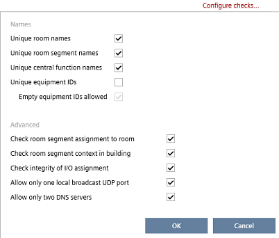
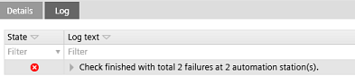
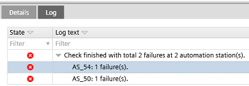

检查重复的设备属性
对于所有设备，以下属性在项目中必须是唯一的：
- Device name
- Device instance number
- IP address
- MS/TP address (combination of MAC address and network number)
- Serial number (must be unique or empty)
您可以检查设备属性冲突Building > Device list.
Device list
为了检查其他重复值，例如Equipment ID、房间名称等，您可以在其中设置检查选项Configure checks.

Check for duplicate properties
- Go to Building > Device list.
- Click Check.
- The Log viewer displays the result messages of the check.

- In the Log viewer, expand the message to see which devices contain errors.

- Double-click the message.
- The line of the invalid device is highlighted in the table.
- The Details pane opens providing detailed error information.
- Correct the error, e.g. by entering a valid Device instance number in the corresponding line.
- Click Save.
- You have checked the device properties for duplicates.